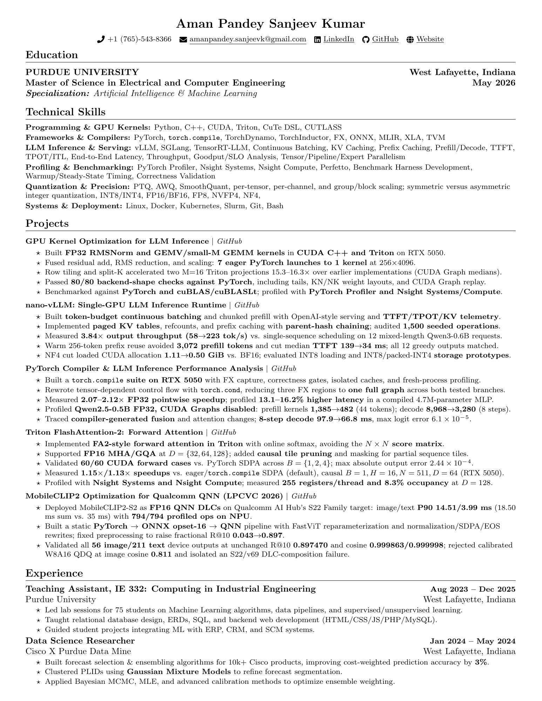

Resume
Current resume of Aman Pandey Sanjeev Kumar: LLM inference, GPU kernel engineering, compiler performance analysis, and edge AI deployment.

Technical Focus
Technical Skills
- Programming & GPU kernels: Python, C++, CUDA, Triton, CuTe DSL, CUTLASS.
- Frameworks & compilers: PyTorch, torch.compile, TorchDynamo, TorchInductor, FX, ONNX, MLIR, XLA, TVM.
- LLM inference & serving: vLLM, SGLang, TensorRT-LLM, continuous batching, KV and prefix caching, prefill/decode scheduling, TTFT, TPOT/ITL, throughput, goodput/SLO analysis, and tensor/pipeline/expert parallelism.
- Profiling & benchmarking: PyTorch Profiler, Nsight Systems, Nsight Compute, Perfetto, benchmark harnesses, warmup/steady-state timing, and correctness validation.
- Quantization & precision: PTQ, AWQ, SmoothQuant, scaling granularity, symmetric/asymmetric integer quantization, INT8/INT4, FP16/BF16, FP8, NVFP4, NF4.
- Systems & deployment: Linux, Docker, Kubernetes, Slurm, Git, Bash.
Education
Purdue University · West Lafayette, Indiana
Master of Science in Electrical and Computer Engineering · May 2026
Specialization: Artificial Intelligence & Machine Learning
Experience
Teaching Assistant, IE 332: Computing in Industrial Engineering
Purdue University · August 2023 to December 2025
- Led labs for 75 students on machine learning algorithms, data pipelines, and supervised/unsupervised learning.
- Taught relational database design, ERDs, SQL, and backend web development with HTML/CSS/JS/PHP/MySQL.
- Guided student projects integrating ML with ERP, CRM, and SCM systems.
Data Science Researcher
Cisco × Purdue Data Mine · January to May 2024
- Built forecast selection and ensembling algorithms for 10,000+ Cisco products, improving cost-weighted prediction accuracy by 3%.
- Clustered PLIDs with Gaussian Mixture Models to refine forecast segmentation.
- Applied Bayesian MCMC, MLE, and calibration methods to optimize ensemble weighting.